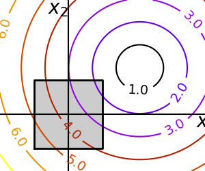
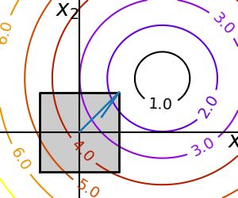

Note
Click here to download the full example code
2.7.4.8. Constraint optimization: visualizing the geometry¶
A small figure explaining optimization with constraints
- 
- 
import numpy as np
import matplotlib.pyplot as plt
from scipy import optimize
x, y = np.mgrid[-2.9:5.8:.05, -2.5:5:.05]
x = x.T
y = y.T
for i in (1, 2):
# Create 2 figure: only the second one will have the optimization
# path
plt.figure(i, figsize=(3, 2.5))
plt.clf()
plt.axes([0, 0, 1, 1])
contours = plt.contour(np.sqrt((x - 3)**2 + (y - 2)**2),
extent=[-3, 6, -2.5, 5],
cmap=plt.cm.gnuplot)
plt.clabel(contours,
inline=1,
fmt='%1.1f',
fontsize=14)
plt.plot([-1.5, -1.5, 1.5, 1.5, -1.5],
[-1.5, 1.5, 1.5, -1.5, -1.5], 'k', linewidth=2)
plt.fill_between([ -1.5, 1.5],
[ -1.5, -1.5],
[ 1.5, 1.5],
color='.8')
plt.axvline(0, color='k')
plt.axhline(0, color='k')
plt.text(-.9, 4.4, '$x_2$', size=20)
plt.text(5.6, -.6, '$x_1$', size=20)
plt.axis('equal')
plt.axis('off')
# And now plot the optimization path
accumulator = list()
def f(x):
# Store the list of function calls
accumulator.append(x)
return np.sqrt((x[0] - 3)**2 + (x[1] - 2)**2)
# We don't use the gradient, as with the gradient, L-BFGS is too fast,
# and finds the optimum without showing us a pretty path
def f_prime(x):
r = np.sqrt((x[0] - 3)**2 + (x[0] - 2)**2)
return np.array(((x[0] - 3)/r, (x[0] - 2)/r))
optimize.minimize(f, np.array([0, 0]), method="L-BFGS-B",
bounds=((-1.5, 1.5), (-1.5, 1.5)))
accumulated = np.array(accumulator)
plt.plot(accumulated[:, 0], accumulated[:, 1])
plt.show()
Total running time of the script: ( 0 minutes 0.075 seconds)